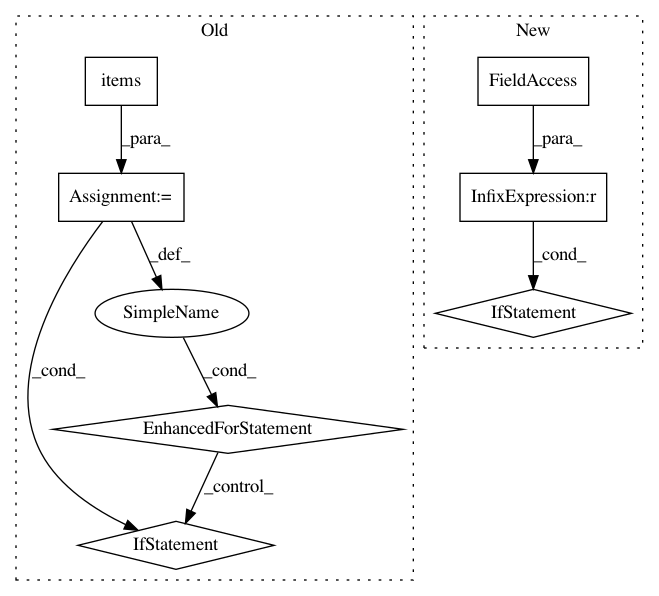

c9642571c23004a10e8bca1a5b1446af399f80db,keras/callbacks.py,History,on_batch_end,#History#Any#Any#,198
Before Change
def on_batch_end(self, batch, logs={}):
batch_size = logs.get("size", 0)
self.seen += batch_size
for k, v in logs.items():
if k in self.totals:
self.totals[k] += v * batch_size
else:
self.totals[k] = v * batch_size
def on_epoch_end(self, epoch, logs={}):
self.epoch.append(epoch)
for k, v in self.totals.items():
if k not in self.history:
After Change
// skip progbar update for the last batch;
// will be handled by on_epoch_end
if self.verbose and self.seen < self.params["nb_sample"]:
self.progbar.update(self.seen, self.log_values)
def on_epoch_end(self, epoch, logs={}):
for k in self.params["metrics"]:
if k in logs:
self.log_values.append((k, logs[k]))
In pattern: SUPERPATTERN
Frequency: 4
Non-data size: 7
Instances
Project Name: keras-team/keras
Commit Name: c9642571c23004a10e8bca1a5b1446af399f80db
Time: 2016-02-16
Author: francois.chollet@gmail.com
File Name: keras/callbacks.py
Class Name: History
Method Name: on_batch_end
Project Name: allenai/allennlp
Commit Name: 700abc65fd2172a2c6809dd9b72cf50fc2407772
Time: 2020-02-03
Author: mattg@allenai.org
File Name: allennlp/common/from_params.py
Class Name:
Method Name: create_kwargs
Project Name: keras-team/keras
Commit Name: ecbf73f72b59f8f5c8746de63270aa1fb3ad7524
Time: 2018-10-01
Author: gabrieldemarmiesse@gmail.com
File Name: keras/callbacks.py
Class Name: TensorBoard
Method Name: on_epoch_end
Project Name: uber/ludwig
Commit Name: 360f6e8aee7989b7e649c21883026612964b9cf7
Time: 2020-03-06
Author: jimthompson5802@aol.com
File Name: ludwig/models/model.py
Class Name: Model
Method Name: train